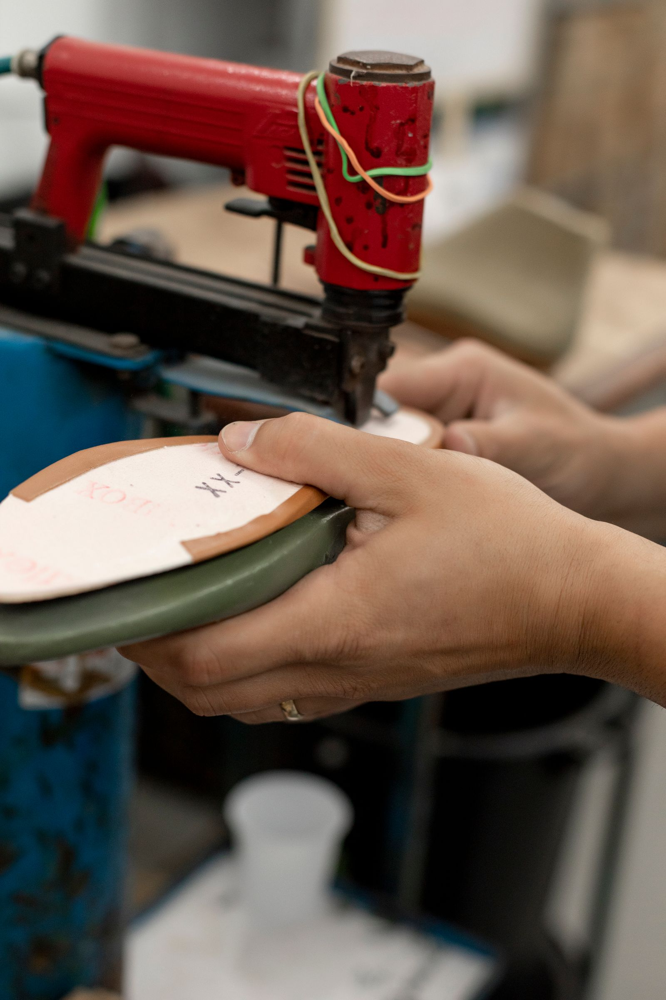
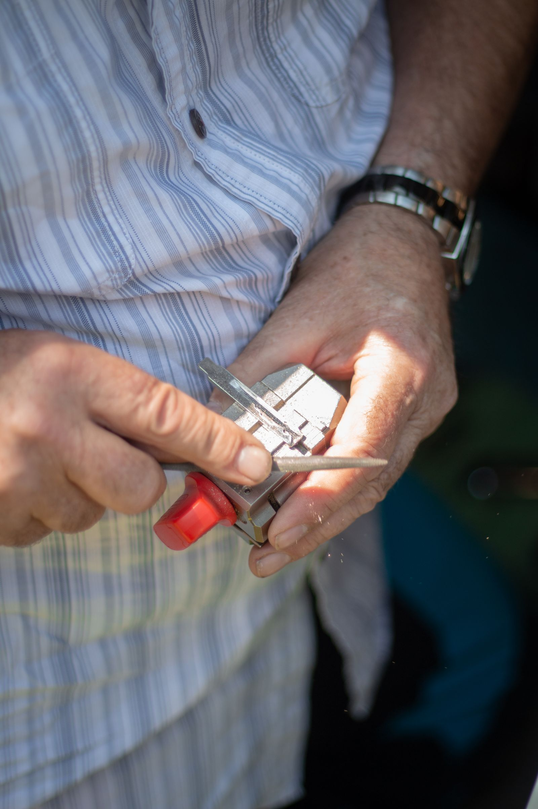

Mutton Lane, Potters Bar
Somewhere else said no.
We had a look at it.
A cobbler on Mutton Lane. Soles and heels, keys cut, bags and straps mended, watch batteries fitted. The jobs other places send away are the ones this shop is known for taking on.
- Rated
- 4.6
- Postcode
- EN6

Work that another repairer has turned away gets taken on here. Boots refused a re-heel, with a trip to another town suggested instead. A high end pair already made a mess of somewhere else, talked through on the phone before anything was promised. Two different people, a month apart, describing the same thing.
That is the whole business in one paragraph. A repair that somewhere else would not attempt, done here, without the journey.
What comes through the door
Four trades under one roof
Most people know this as the shoe repair place, which it is. It is also where you get a key cut, a watch battery changed, and a bag or a strap put back together.
Soles and heels
The main work, and the reason most people know the shop at all.
Keys cut
Including several at once, which is worth asking about if you are doing a whole set.
Bags and straps
Handles, straps and stitching. A leather backpack handle went back out three days after it came in.
Watch batteries
Fitted at the counter while you wait, rather than sent away for a fortnight.
If you are not sure whether something can be saved, bring it in. That question is the one this shop answers best.

Keys are the trade most people walking past do not know happens here. Stock photograph, not this shop.
What the counter is like
Four point six, and the recent ones all get a reply
A repair shop earns its rating slowly, because people are far likelier to write something after a problem than after a job that simply worked.
Awkward jobs get discussed first
If something has already been repaired badly elsewhere, or it is worth more than the repair, you get a conversation on the phone before it is taken on rather than a promise you did not ask for.
Bags and straps come back quickly
A leather handle and strap on a backpack went out again three days after it came in. Stitching work does not need to sit in a queue for a fortnight.
Watch batteries while you wait
A five minute job that half the high street now sends away. It is done at the counter here, and the price is the reason people mention it.
Find us
4 Mutton Lane
On Mutton Lane in Potters Bar, a short walk from the station end of the high street.
Heel 2 Toe Cobblers
4 Mutton Lane
Potters Bar EN6 2PA
Ring before you set off
A quick call is the safest way to know somebody is there and to find out whether a job can be done the same day.
Questions
The usual ones
Somewhere else told me it could not be repaired. Is that it?
Not necessarily. That is the single most common reason people end up here, and it is worth a second opinion. It costs nothing to bring it in and be told either way.
How long do repairs take?
It depends on the job. Small work is often done while you wait, and one recent bag repair went back to its owner within three days.
Do I need to book?
No. It is a walk-in shop. Ring first if you want to check somebody is in.
Do you really cut keys as well?
Yes. It is one of the things customers mention most, and it is worth asking if you need more than one.
Can you fix bags and straps, not just shoes?
Yes. Handles, straps and stitching on bags and backpacks are regular work here.